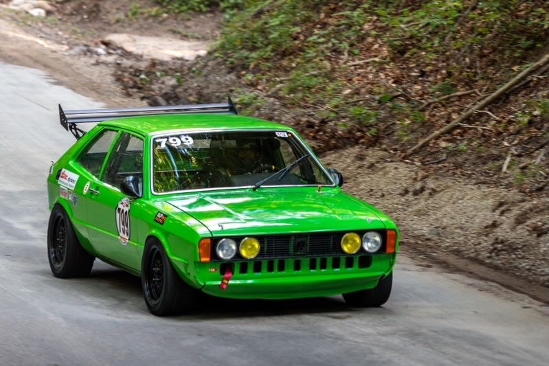
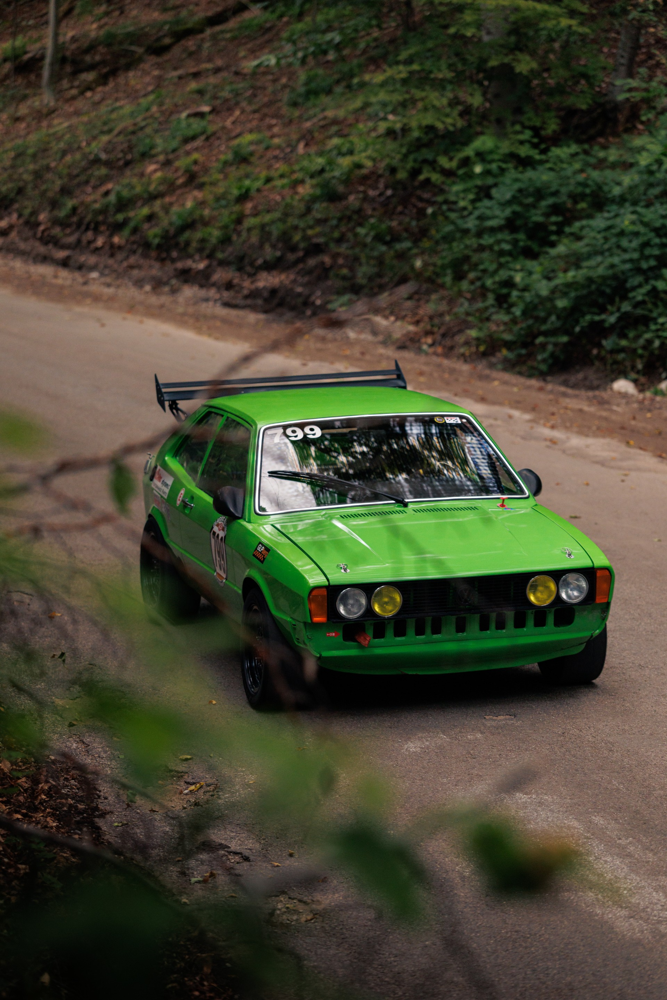
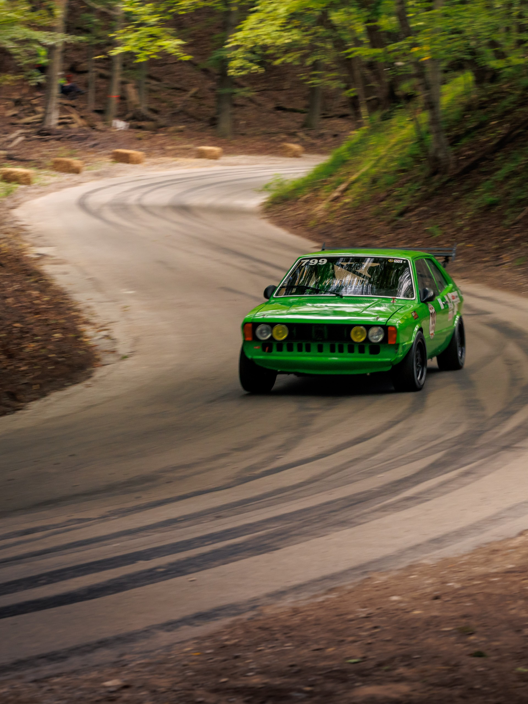

Engine
BlockOBD1 ABA 2.0L 8V
Head1.8L 8V
InductionDual 40mm Weber DCOE
Valve TrainDbilas cam & valve springs
PistonsForged
ExhaustStainless race header · muffled
A first-generation Scirocco built for competition without losing what makes the car interesting in the first place. Simple, light, mechanical and constantly evolving through real events.






Specs only tell part of the story. #799 is built, tested and developed through real competition.
#799 is not a static show build. Brakes, suspension, power, aero, reliability and driver confidence all get evaluated through competition. Changes have to make sense on the clock and in the paddock.
That also makes the car a useful platform for technical partners: parts are not just installed for a photograph , they become part of an ongoing development program.
The build only matters because the car gets used. See the results and follow the race program.
View Racing